The dungeon is filled with useful items, treasures, and death-bringing instruments.
Sword: You will always have a sword. If you pick up something big, you will automatically put away your sword until you drop the new item. The sword is the best weapon for close combat, but cannot be thrown and is not much use for breaking things.
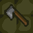 Axe: An average weapon. The axe does more damage than the sword, but is slightly slower. It can also be thrown, or used to smash wooden objects.
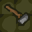 Hammer: The hammer does the greatest damage, but is rather slow and unwieldy for use in hand to hand combat. It is however the weapon of choice for smashing up furniture and other obstacles; it will destroy any wooden object in a single hit.
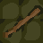 Staff: A staff cannot be used in combat, but is instead used for disarming traps. If you open a door or chest while holding a staff, then no trap will harm you.
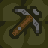 Crossbow: A crossbow is a powerful weapon – if it is loaded. To load a crossbow you must hold both the crossbow and at least one bolt, and remain standing still. If loading is aborted (for example by moving) then you must start from the beginning again.
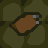 Bolts: Used as ammunition for the crossbow. Bolts are useless without a crossbow, and vice versa.
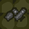 Throwing Daggers: These can be thrown from the Action Menu. They do little damage on their own, but can be deadly if used in large numbers. Note you will have to drop any weapon you are carrying (apart from the sword) before you can use throwing daggers.
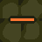 The dungeon can contain up to eight wands (if there is more than one, they will all be of the same kind). Wands are used like weapons, and to release their power you need to physically hit your target. The types are:
Wand of Destruction: Destroys any creature or wooden, breakable object.
Wand of Undeath: Infused with black magic, this wand will destroy any zombie it strikes, and will also turn an enemy knight into one! Zombies are afraid of this wand and will retreat from any knight who carries it.
Wand of Open Ways: Opens its target, be it a locked door or a creature :)
Wand of Securing: Used to "secure" entry points so that other knights cannot use them. If an enemy knight secures your entry point, then you will be assigned a new entry point at random, which will be used for healing and re-entry from then on. If enemy knight(s) have secured all the entry points, and you die, then you will lose the game. Note that securing an entry point does not prevent you from using that entry point yourself, it only prevents your opponents from using it (unless two players have secured it, in which case it is effectively removed from the game). Finally, the Wand of Securing also does a small amount of damage in combat, so it can be used as a melee weapon.
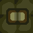 Some quests require you to retrieve a certain book from the dungeon. Some books also have magical properties. The following types exist:
Lost Book of Ashur: A general book with no special properties. It will be hidden somewhere in the dungeon.
Necronomicon: This Book of Dark Magic is always located in a necromancer's chamber behind locked iron doors. When taken for the first time, its powers are unleashed and any nearby corpses are raised as zombies. In addition, while this book is carried, zombie activity is automatically at its maximum.
Tome of Gnomes: The mischievous Gnomes always hide their books behind devious traps and puzzles.
Ancient Book of Knowledge: This book grants its holder a full map of the dungeon. Alas, your location will be visible to your opponent while you are carrying it.
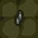 Poison Needles: These can be used to trap doors and chests. Any knight who sets off the trap will be killed, unless he is immune to poison, invulnerable, or carrying a staff.
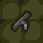 Spring Blades: These can also be used to trap doors and chests. A spring blade will fire (towards the direction from which the trap was originally placed) if someone opens or strikes the trapped object.
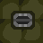 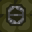 Bear Traps: Bear traps lying on the floor are either armed or unarmed. An unarmed bear trap (left) can be picked up or walked over without fear. Once picked up, you can then arm the trap and place it into an unoccupied square (right). If a knight walks into an armed bear trap he will be injured and stuck for a while. Armed traps can be safely disarmed by striking them with a weapon.
As well as trying to trap your opponents, you can also use bear traps as alarms. The sound of a bear trap closing is loud enough to be heard from across the dungeon, so you can set the trap in a certain, strategic place, and you will then be alerted when somebody triggers the trap.
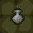 Potions: Magical potions can be drunk by picking them up. They have a variety of effects, mostly helpful but some harmful. Here is a list:
| Name | Effect |
|---|---|
| Healing | Heals your Knight |
| Poison Immunity | Protects you from poison |
| Poison | Kills you, unless you have poison immunity |
| Paralyzation | Prevents you from moving for a while |
| *Strength | Increases your strength |
| *Quickness | Increases your speed |
| *Regeneration | Makes you regenerate (auto-healing) |
| *Invisibility | Makes you invisible |
| *Super | Combination of strength, quickness and regeneration |
* Only one of these may be in effect at a time.
All effects (except healing) are temporary.
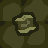 Scrolls: Scrolls are read by picking them up. Some may have effects similar to potions, but others can have additional effects, as follows:
| Name | Effect |
|---|---|
| Map | Reveals a complete map of the dungeon |
| Teleport | Teleport you to a random other knight, or him to you |
| Sensing | Shows you the location of all enemy knights |
| Reveal Location | Your location will appear on the map of all enemy knights! |
| Sense Treasure | Shows the locations of any gems, wands and books in rooms you have already mapped |
| Invulnerability | Makes you invulnerable to all attacks (but you can still be killed by walking into a pit, or being turned into a zombie) |
| Amnesia | You lose your map of the dungeon |
| Necromancy | You are turned into a zombie! |
After reading a scroll, its powers are consumed and it disappears.
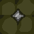 Gems: Gems have no special effects or powers, but you may need to collect a certain number in order to complete your quest.
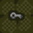 Keys: Used to open locked doors and chests. There are up to three keys in the dungeon – each door and chest will only be opened by one of the keys.
Lock Picks: An alternative way of opening doors and chests. Used via the Action Menu. The lock picks will open any lock, but take time to use.